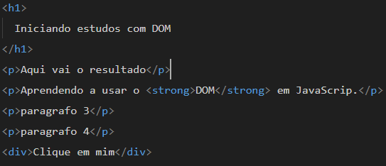
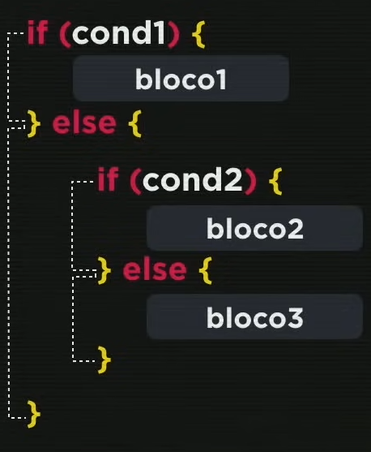
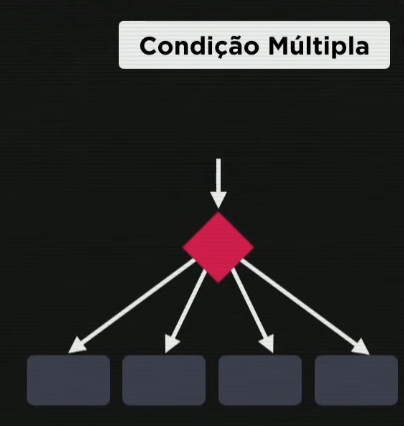
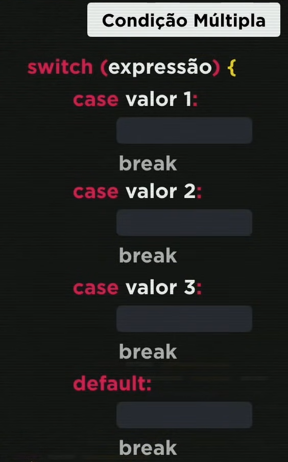

My room study
Java Script
Sumário
- Var,Let e Const,qual usar?
- Camel Case e Snake Case
- Number e string
- Convertendo string to number
- templateLiterals ${ }
- Conversão duas casas decimais
- Conversão ponto para virgula
- Transformar numero com " . " para " , "
- Conversão de número (Real,Dólar e Euro)
- Operadores aritméticos (5+2=7)
- Auto atribuição +=
- Incremento ++
- Relacionais (Comparação > <
- Logicos (! && ||)
- Ternário
- Document Object Model (DOM)
- Condições (IF & else)
- Expressão Regular (ou Regex) /\D+/g
- Objetos
1. Var,Let e Const
2. Snake Case e Camel Case
Snake Case (ou snake_case)
- No Snake Case, as palavras são separadas por sublinhados ($\_$).
- Exemplo: minha_variavel_longa
- É muito comum em linguagens como Python e Ruby.
- É frequentemente usado para nomes de variáveis, funções e arquivos.
- É considerado altamente legível, pois cada palavra está claramente separada.
Camel Case (ou camelCase)
- No Camel Case, a primeira palavra começa com letra minúscula e as palavras subsequentes começam com letra maiúscula, sem espaços ou sublinhados.
- Exemplo: minhaVariavelLonga
- É a convenção padrão em linguagens como JavaScript, Java e C# (para variáveis e métodos).
- O nome vem da "corcova" que as letras maiúsculas formam no meio da palavra.
- Em Java, ele é estritamente usado para métodos e variáveis.
3. Number e string
String:
- Não permite cálculos matemáticos.
- Importante: String sempre são usadas dentro de aspas simples (' ') ou duplas (" ").

"Nike" é uma string.
Number:
- Permite cálculos (somar, subtrair, multiplicar).
- Importante: sempre é usada fora das aspas

4 é um number.
4. Convertendo valores

Colocar o number ao lado de .toString( )

console.log(typeof ToNumber)
typeof mostra o tipo,se é string ou number,boolean,etc...
5. Juntar variáveis ao texto (templateLiterals)
'O aluno Leonardo de 19 anos tirou 7 na prova'

`O aluno ${aluno} de ${idade} anos tirou ${nota} na prova`
Basta colocar a variável dentro de ${} para mencionar ela,e colocar crases `` no lugar das aspas em volta
var nome = prompt("Qual seu nome?")
console.log(nome)
var idade = prompt(`Olá ${nome}, Quantos anos
você tem?`)
console.log(idade)
alert("Que legal!")
document.write(`Seu nome é <strong>${nome}</strong>;
e você tem ${idade} anos.
`)
document.write(`Seu nome tem ${nome.length} letras.
`)
document.write('Para contar a quantidade de letras
existentes no nome considere usar ${variavel.length}
igual mostra na foto abaixo:
')
document.write(` `)
`)
6. Mostrar segundo número após a virgula:
Exemplo 1:
let valor = 45.2
let resultado = valor.tofixed(2)
console.log(resultado)
saída do console = 45.20
Exemplo 2

=

7. Conversão de número ponto para vírgula:
Usando Replace:
Mais simples de converter
let numero = "45.20"
let numeroComVirgula = numero.replace('.' , ',')
resultado: 45,20
Usando toLocaleString()
Este é o método recomendado porque ele lida automaticamente com o ponto decimal, separadores de milhar (se houver) e arredondamento, tudo de acordo com as regras do local (pt-BR).
- O método toLocaleString com 'pt-BR' garante:
- 1. Vírgula como separador decimal.
- 2. Ponto como separador de milhar.
- 3. Arredondamento (se não especificarmos o máximo de casas).
let numero = 12345.789
let numeroBRL = numero.toLocaleString('pt-BR',{
minimumFractionDigits: 2,
maximumFractionDigits: 2
})
- Garante que o resultado terá, NO MÍNIMO, 2 casas decimais.
- Efeito: Se o número for '10', ele preenche para '10,00'.
- minimumFractionDigits: 2
- Garante que o resultado terá, NO MÁXIMO, 2 casas decimais.
- maximumFractionDigits: 2
- Efeito: Se o número for '123.456', ele arredonda para '123,46'.
8. Conversão de real, dólar e euro
Real R$:
var n1 = 1543.5
console.log(n1)
console.log(n1.toLocaleString('pt-BR', {style: 'currency', currency: 'BRL'}))
=

Dólar USD
var n2 = 1543.5
console.log(n2)
console.log(n2.toLocaleString('pt-BR', {style: 'currency', currency: 'USD'}))
=

Euro €
var n3 = 1543.5
console.log(n3)
console.log(n3.toLocaleString('pt-BR', {style: 'currency', currency: 'EUR'}))
=

9. Operadores aritméticos
- 5 + 2 = 7
- 5 - 2 = 3
- 5 * 2 = 10
- 5 / 2 = 2.5
- 5 % 2 = 1
- 5 ** 2 = 25
10. Auto atribuição
Formato longo(padrão)
Let valor = 10;
valor = valor + 5;
valor + 5 soma o valor anterior mais o valor atual a ser somado
Resultado: valor é 15
Formato abreviado(Auto Atribuição)
Em vez de escrever a variável duas vezes, você usa um operador de atalho (como +=, -=, *=, etc.).
x = x + y
Soma y e atribui o novo valor a x.
-=x = x - y
Subtrai y e atribui o novo valor a x.
*=x = x * y
Multiplica por y e atribui o novo valor a x.
/=x = x / y
Divide por y e atribui o novo valor a x.
%=x = x % y
Calcula o resto da divisão por y e atribui a x
11. Incremento
Como incremento funciona(++)
O uso do operador ++ é um atalho para a operação completa de auto atribuição de soma
Pré-incremento (++variável)
let numero = 5;
'numero' é incrementado para 6 ANTES de ser usado no console.log
console.log(++numero);
Resultado no console: 6
Pós incremento
let numero = 5;
'numero' é usado na operação com o valor 5 PRIMEIRO, e depois incrementado
console.log(numero++); Resultado: 5
(Somente após usar o incremento o resultado irá mudar) resultado agora: 6
Somente após incrementar que ele adiciona,diferente do pré incremento que no mesmo momento em que adiciona ele já altera o valor
Resultado no console: 6
11. Relacionais
Os Operadores Relacionais (ou de Comparação) em JavaScript são usados para comparar dois valores (operandos) e determinar a relação entre eles.
1. Operadores de Maior, Menor, Maior ou Igual e Menor ou Igual
- Operador > Maior que
- Exemplo: 5 > 3
- Resultado: true
- 5 é maior que 3.
- Operador < Menor que
- Exemplo: 5 < 3
- Resultado: false
- 5 não é menor que 3.
- Operador>= Maior ou igual a
- Exemplo: 5 >= 5
- Resultado: true
- 5 é igual a 5.
- Operador<= Menor ou igual a
- 3 <= 5
- Resultado: true
- 3 é menor ou igual a 5.
2. Operadores de Igualdade e Desigualdade
Igualdade Não Estrita (Loose Equality)
- Operador == Igual a
- Exemplo: 5 == '5'
- Resultado: true
- 5 é igual a '5'.
- Operador != Diferente de
- Exemplo: 5 != '5'
- Resultado: false
- 5 não é diferente de '5'.
Compara apenas o valor. O JavaScript converte a string '5' para o número 5 antes da comparação.
Retorna o oposto de ==. Como os valores são considerados iguais após a conversão, o resultado é falso
⚠️ Importante: O operador == tenta forçar os operandos a serem do mesmo tipo (coerção de tipo) antes de compará-los, o que pode levar a resultados inesperados. Por isso, é fortemente recomendado usar a Igualdade Estrita (===).
Igualdade Estrita (Strict Equality)
- Operador === Exatamente igual a
- Exemplo: 5 === '5'
- Resultado: false
- 5 não é exatamente igual '5'.
- Operador !== Exatamente diferente de
- Exemplo: 5 !== 5
- Resultado: true
- 5 é exatamente diferente '5'.
Compara o valor e o tipo. O número 5 é de tipo number, a string '5' é de tipo string. Tipos diferentes, resultado é falso.
Retorna o oposto de ==. Como os valores são considerados iguais após a conversão, o resultado é falso
⚠️ Importante: O operador == tenta forçar os operandos a serem do mesmo tipo (coerção de tipo) antes de compará-los, o que pode levar a resultados inesperados. Por isso, é fortemente recomendado usar a Igualdade Estrita (===).
12. Lógicos
! negação
Só tem um operando,após a exclamação coloca True,False ou uma expressão que termina em True ou False
! nega,então uma coisa ! true (é não verdadeira) = false
Ex:
!
true
false
false
true
&& Conjunção
Tem dois operadores lógicos,um de cada lado,se ambos os lados forem true o final será true,se algum dos lados ou ambos forem false então final será falso
Preciso de um caderno e um lápis,se me trouxer apenas um lápis,ou apenas o caderno eu não vou aceitar,apenas se trouxer o lápis e o caderno
Ex:
true
&&
true
true
true
false
false
false
true
false
false
false
false
|| Disjunção
Tem dois operadores lógicos um de cada lado,se um ou ambos forem verdadeiros o final será verdadeiro,basta que um seja verdadeiro.
Ex:
true
||
true
true
true
false
true
false
true
true
false
false
false
13. Ordem de precedência
- ()
- **
- /
- ...
- >
- <
- >=
- ...
- !
- &&
- ||
14. Ternário
É composto por dois pontos dentro de uma mesma expressão,eles são: ? :
Se chama ternário pois ele tem três partes.
- Teste
- ?
- true
- :
- false
Exemplo prático
- Média >=
- ?
- "Aprovado"
- :
- "Reprovado"
Resultado irá ser "aprovado" ou "reprovado", depende do teste lógico (da média) do primeiro quadro.
Ver mais exemplos15. Document Object Model (DOM)
Selecionar um elemento HTML pela TAG
Selecionando a 3º tag p "Parágrafo 3"
Nesse caso tag
- Primeiro criamos uma variável que irá ser o nome do elemento selecionado dentro do JS.
- E junto dele selecionamos o documento 'document'.
- após isso usamos o elemento 'getElementsByTagName' para selecionar a tagName e colocamos a tag dentro dos parenteses ( ),e nesse caso como temos mais de um elemento 'p' utilizamos um equivalente ao nth-child do CSS para selecionar qual dos elementos p será selecionado (os colchestes [ ] ).
- var p1 = document.getElementsByTagName('p')[2]
- variável
- Documento
- Seletor de TagName
- Acesso por Posição (ou Índice)
16. Condições
As condições são o que permitem o código tomar decisões. Ela faz com que o programa execute dois caminhos dependendo se a situação é verdadeira ou falsa.
Condição simples:
Somente com if
if(condição){
true
}
Condição padrão (com if &
A estrutura if
- a palavra if verifica uma expressão.
- se o resultado da expressão for verdadeiro(true),o código dentro das chaves { } é executado.
- Ex:
let hora = 11 if (hora < 12 ){- // Esta condição (11 é menor que 12) é verdadeira, então este código roda.
console.log("Bom dia!");}
A estrutura else
- Se a condição if for falsa(false),voce pode executar o else para especificar uma alternativa para ser executada.
Ex: let hora = 15if (hora < 12) {- // 15 não é menor que 12, então esta parte é ignorada.
console.log("Bom dia!");- Neste caso bom dia é ignorado.
} else {- // A condição foi falsa, então este código roda:
console.log("Boa tarde!");}
Condições aninhadas
Para ir para o bloco2 o bloco1 deverá ser falso (executar o else do bloco1)
Exemplo prático:
var idade = 67
console.log(`Você tem ${idade} anos`)
if (idade < 16){
console.log('Não vota')
}else if (idade > 18 || idade > 65){
console.log('Voto opcional')
}else {
console.log('Voto obrigatório')
}
Segundo exemplo:
var agora = new Date()
var hora = agora.getHours()
var minuto = agora.getMinutes()
console.log(`Agora são exatamente
${hora} horas e ${minuto}
minutos.` )
if (hora <= 4 || hora >= 18){
console.log('Boa noite!')
}else if(hora <=12){
console.log('Bom dia')
}else{
console.log('Boa tarde')
}
Dica: pegar hora exata do sistema variavel.getHours,pegar minuto variavel.getMinutes,...
Condição múltipla (switch)
Tem a possibilidade de varios valores fixos.
Switch serve para testar valores pontuais,valores inteiros e com caracteres/strings

var day = new Date()
var diaSem = day.getDay()
0 = domingo
1 = segunda
2 = terça
3 = quarta
4 = quinta
5 = sexta
6 = sábado
console.log(diaSem)
switch(diaSem){
case 0:
console.log('Domingo')
break
case 1:
console.log('Segunda')
break
case 2:
console.log('Terça')
break
case 3:
console.log('Quarta')
break
case 4:
console.log('Quinta')
break
case 5:
console.log('Sexta')
case 6:
console.log('Sabado')
break
default:
console.log('[ERROR]
Digite um dia válido')
break
}
17. Expressão Regular (ou Regex)
Uma Expressão Regular é uma sequência de caracteres que define um padrão de busca.
São eles:
- Buscar: Encontrar a ocorrência de um padrão específico em um texto (string).
- Validar: Verificar se um texto corresponde a um formato exigido (ex: formato de e-mail, CPF, data).
- Substituir/Extrair: Trocar partes de um texto que correspondam ao padrão' ou extrair informações específicas.
'/\D+/g' O que essa expressão faz?
- '/' e '/'
- Delimitam o início e o fim da expressão.
- '\D'
- Corresponde a qualquer caractere que NÃO seja um dígito de 0 a 9. (É o oposto de \d, que corresponde a um dígito).
- '+'
- Significa "uma ou mais" ocorrências do item anterior (\D).
- 'g'
- Significa que a busca deve ser Global, encontrando todas as ocorrências do padrão na string, e não parar após a primeira.
- Se você aplicar /\D+/g na string: "Minha idade e 30 anos e meu peso e 85 kg"
- As correspondências (matches) que seriam encontradas são:
- "Minha idade e"
- "anos e meu peso e"
- "kg"
Em resumo, essa Regex busca por uma ou mais sequências de caracteres que não são números, em todo o texto.
Os números (30 e 85) seriam ignorados (não correspondidos), pois o padrão é explicitamente por não-dígitos.
Mais Exemplos de Expressões Regulares Comuns
-
- Exemplo: user@exemplo.com
- regex:
/user/ - Resultado: "user"
- Encontra a sequência exata de caracteres "user".
-
- Exemplo: banana e abacaxi
- regex:
/a/g - Resultado: ["a", "a", "a", "a", "a", "a"]
- O flag g (global) encontra TODAS as letras 'a', não apenas a primeira.
-
- Exemplo: Abacaxi
- regex:
/^A/ - Resultado: ["A"]
- O ^ âncora a busca no início da string.
-
- Exemplo:Este é o fim
- regex:
/fim$/ - Resultado:["fim"]
- O $ âncora a busca no fim da string.
E existem muitas outros tipos de regex para estudar.
18. Objetos
Um objeto é uma estrutura que representa algo com propriedades e comportamentos.
Métodos e Interpolação
Um Método é uma função associada a um objeto. Abaixo, o método message usa Interpolação (${}) para exibir a propriedade name.
const user = {
name: "Leonardo",
message: function(){
console.log(`Olá
${user.name}`)
}
}
user.message()
Saída: Olá Leonardo
Exemplo de um Objeto
const user = {
email:"João@email.com",
age: 19,
name: {
firstName: "João",
surname: "Silva",
},
address:{
street: "Rua X",
number: 23,
city: "São Paulo",
postal_code: "12345-123"
},
message: function (){
console.log('Oi João')
}
}
- User é a variável.
- Objeto é a estrutura inteira.
- Email,age,name,address e message são propriedades
- FirstName,surname,street,number,city e postal_code são propriedades aninhadas das propriedades anteriores
- "João@email.com" , 19 , "João" , "Silva" , "Rua X" , 23 , "São Paulo" e "12345-123" são apenas valores das propriedades anteriores,mas não são propriedades.
Acessando propriedades e métodos usando a notação de ponto.
console.log(user.email)
console.log(user.name.firstName)
console.log(user.name.surname)
Acessando os valores das propriedades
console.log(user.address.postal_code)
// Executa o método do objeto.
variável.message()
Atualizando Propriedades do Objeto
Propriedades de objetos podem ser alteradas a qualquer momento usando as notações de ponto ou colchetes.
const product = {
name: "teclado",
quantity: 100,
}
Notação de Ponto
console.log(product.quantity)
Saída: 100
product.quantity = 90
console.log(product.quantity)
Saída: 90
Notação de Colchetes
product["quantity"] = 50
console.log(product["quantity"])
Saída: 50
Outro exemplo de notação de colchetes
console.log(user["email"])
console.log(user["name"]["surname"])
user["message"]()
Ver código completo
Criar um objeto vazio.
Cria um objeto vazio.
const obj = {}
console.log(obj)
console.log(typeof obj)
A Palavra-Chave 'this'
O this se refere ao próprio objeto no qual o método está sendo executado. Ele torna o código mais flexível, pois não depende do nome da variável do objeto.
Regra do 'this': function vs. Arrow Function
1.Function: O this aponta para o objeto automovel.
const automovel = {
yourName: "Leonardo",
message: function(){
console.log(`Olá
${this.yourName}`)
}
}
automovel.message()
Saída: Olá Leonardo
2.Arrow Function:this não funciona com Arrow Function.
const automovel = {
yourName: "Leonardo",
message: () => {
console.log(`Olá${this.yourName}`)
}
}
automovel.message()
Saída: Olá undefined
Optional Chaining (?.)
Serve para quando não sabemos se a propriedade existe ou se tem valor ou não.
Se uma propriedade aninhada (ou função) for null ou undefined (ou não tiver valor), a expressão retorna undefined em vez de gerar um erro.
const user = {
id: 1,
name: "Leonardo",
address: {
street: "Avenida Brasil",
city: "São Paulo",
geo: {
latitude: 47.808,
longitude: 17.5674,
},
},
message: function(){
console.log(`Olá, ${this.name}`)
}
}
O "?." evita um erro se 'geo' ou 'latitude' não existir.
Perguntando se latitude existe:
console.log(user?.address?.geo?.latitude)
Caso não exista, valor será:
undefined (sem erro!)
Também funciona para funções, executando-a apenas se ela existir.
user.message?.()
Executa a função 'message' com segurança.
OPERADOR DE COALESCÊNCIA NULA (??)
Operador lógico que retorna o seu operando do lado direito quando o seu operador do lado esquerdo é null ou undefined. Caso contrário, ele retorna o seu operando do lado esquerdo.
let content = null
console.log(content ?? "conteúdo padrão")
OPERADOR DE COALESCÊNCIA NULA (??) verifica se content é null,se for null irá executar a string após "??"
Mas se content tiver algum valor além de nulo ou undefined ele mostrará o conteúdo
FALSE ele entende como conteúdo,e não como null/undefined
const user = {
name: "Leonardo",
avatar: undefined
}
console.log(user.avatar ?? "default.png")